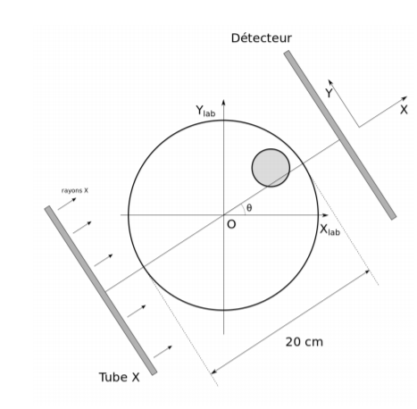
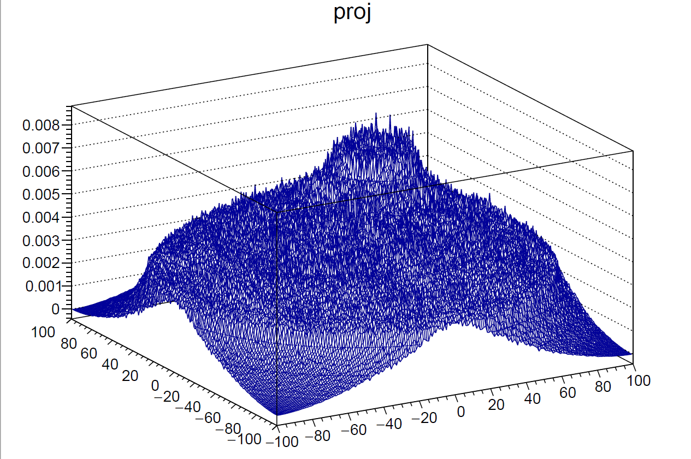
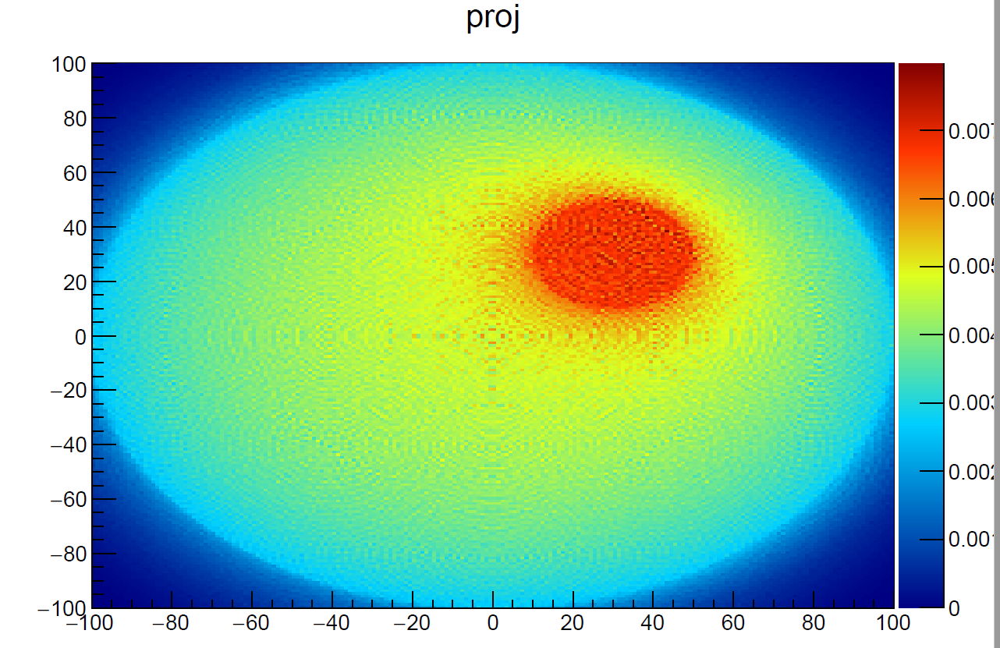
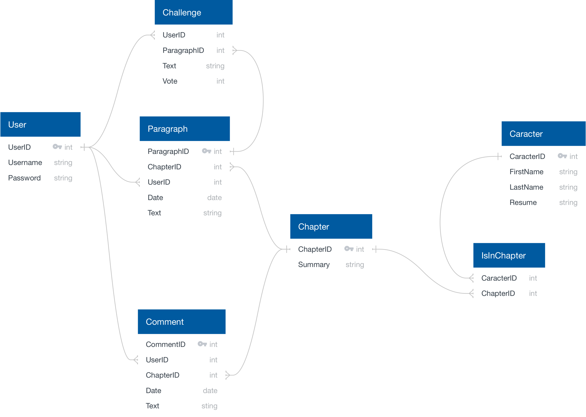

JEFFREY NGUYEN
Etudiant en intelligence artificielle en recherche d'une alternance dans le domaine de
l'IA ou la
DATA
COMPETENCES CLéES :
Concevoir, créer et interroger une base de données:
- MySQL,SqlLite3, PostgreSQL, BigQuery, MongoDB, UML
Créer des visualisations:
- Matplotlib, Seaborn,(PowerBI ...)
Mettre en place un algorithme de machine learning:
- Scikit-learn, Keras, Pytorch
Mettre en place une application intégrant l’IA:
Gestion de projet :
- Git, Github, Trello, MLFlows, Scrum,Discord
Langues :
Certification:
- Azure Certification AZ-900 et AI-900 (en cours) Agile (en cours)
FORMATIONS :
Ecole mycrosoft by Simplon
DEV-IA(Lille Novembre 2022 - Août 2023)
- Machine learning et Data Analysis
TECH-IA(Lille Juin 2022- en cours)
- Python
- SqlLite3
- Pandas
- MongoDB
L3 Physique
L2 Physique(Lyon 2018-2019)
- Introduction au C++ (bases de la POO)
Méthodes numérique pour la physique :
- Analyse des fonctions (Résolution d'équation et de systèmes différentiels et Minimisation)
- Analyse des données (Interpolation et ajustement)
- Résolution d'équations linéaires
CONTACTEZ-MOI ! :
- Téléphone : 07 81 52 07 64
- E-mail : Jeffrey69140@gmail.com
- Github : JynMoriarty
PROJETS C++ EN LICENCE
Projet en c++ : Reconstitution d'un objet avec un scanner



PROJETS :
Projet d'histoire coopératif :
